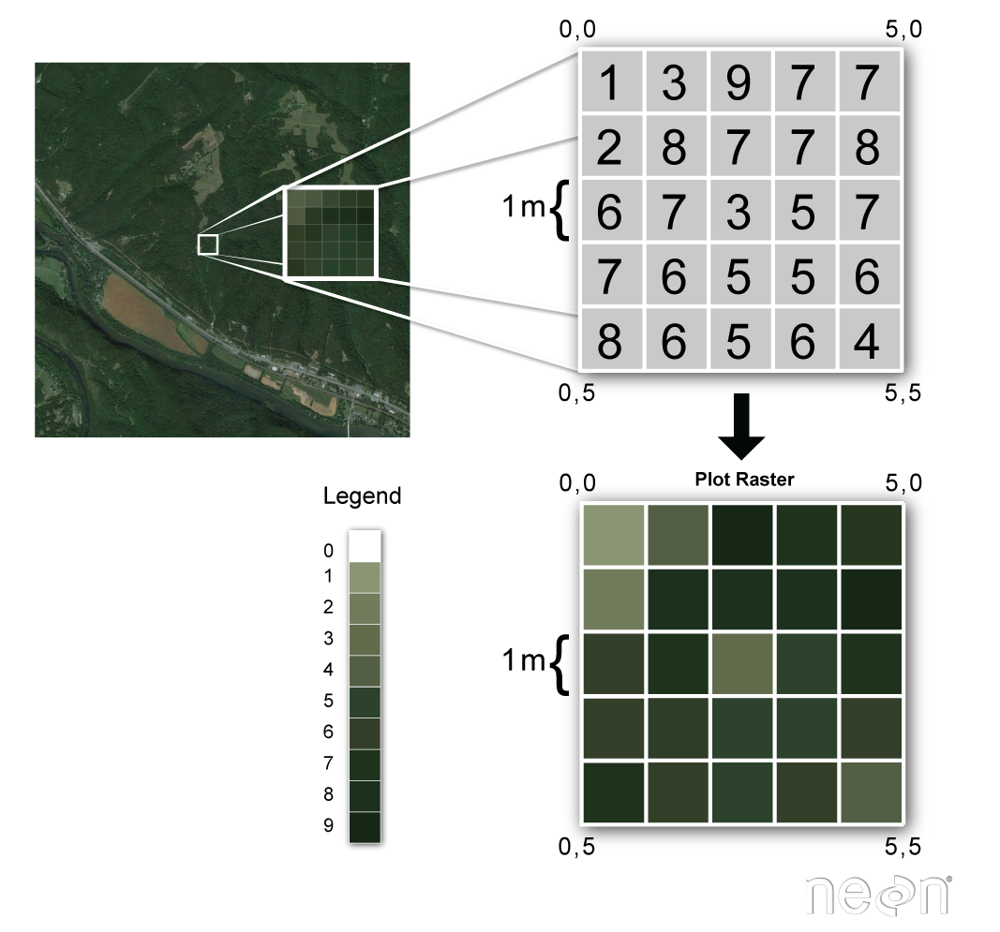
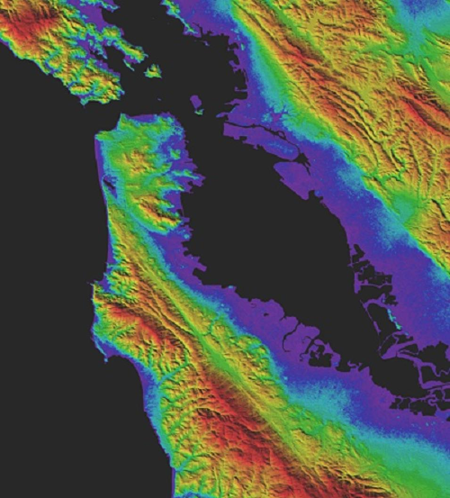
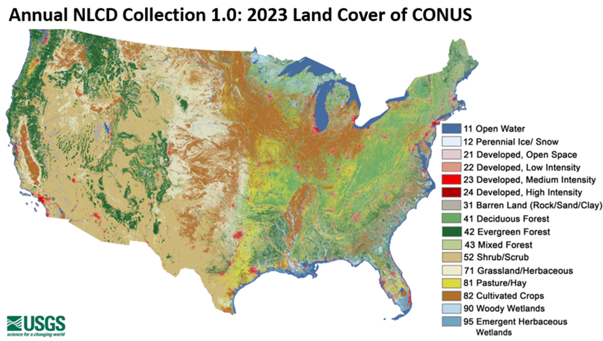

10 - Raster Data Analysis I#
Table of Contents#
Part I (this week)#
What is raster data
Tools for processing raster data - I
GDAL
Rasterio
Geospatial tool Installation
Exercises
Part II (next week)#
Multispectral Data
Tools for processing raster data - II
Rioxarray
Earthpy
Fire mapping using multispectral remote sensing data
1. What is raster data?#
Raster data is any gridded data where each pixel is associated with a specific geographical location. Raster data is stored as a grid of values, which are rendered on a map as pixels (also known as cells) where each pixel (or cell) represents a value of the Earth surface.

Examples of raster data are satellite images or aerial photographs.

Landsat raster image of the Lena River, one of the largest rivers in the world acquired by Landsat 7’s Enhanced Thematic Mapper plus (ETM+) sensor on July 27, 2000. The Lena Delta Reserve is the most extensive protected wilderness area in Russia. It is an important refuge and breeding ground for many species of Siberian wildlife. This image is part of the Landsat Earth as Art series.
The value of a pixel can be continuous, such as satellite images and elevation maps or categorical, such as land use and land cover maps.

30 m global topography map produced using ASTER satellite data by NASA.

National Land Use and Land Cover maps (https://www.usgs.gov/centers/eros/science/annual-national-land-cover-database) produced by USGS. The map above shows the contiguous United States with land cover as categorical data. Each color is a different landcover category.
Raster data has some important advantages:
representation of continuous surfaces
potentially very high levels of detail
data is ‘unweighted’ across its extent - the geometry doesn’t implicitly highlight features cell-by-cell calculations can be very fast and efficient
The downside of raster data os:
very large file sizes as cell size gets smaller
Tools for processing raster data#
Essential geospatial python libraries
GDAL#
https://gdal.org/ GDAL is the Geospatial Data Abstraction Library, which contains input, output, and analysis functions for over 200 geospatial data formats and a translator library for raster and vector geospatial data formats that is released under an X/MIT style Open Source License by the Open Source Geospatial Foundation. As a library, it presents a single raster abstract data model and a single vector abstract data model to the calling application for all supported formats. It also comes with a variety of useful command-line interface (CLI) utilities for quick raster processing tasks (resampling, type conversion, etc.).
Many of the libraries which are described here rely on GDAL, which is the cornerstone for reading, writing and manipulating raster and vector data in many software packages. However, the GDAL Python bindings (GDAL is originally written in C) are not as intuitive as expected from standard Python.
Rasterio#
Rasterio is a highly useful module for raster processing, which you can use for reading and writing several different raster formats in Python. Rasterio is based on GDAL and Python automatically registers all known GDAL drivers for reading supported formats when importing the module. Most common file formats include TIFF and GeoTIFF, ASCII Grid and Erdas Imagine and ENVI.img-files.
Geospatial tool Installation#
If you are using the miniforge environment, use the following commands to install:
conda install rioxarrayconda install earthpyconda install dask
If you are using Anaconda/miniconda, then you need to use the following commands to install:
conda install conda-forge::rioxarray`conda install conda-forge::earthpy’
conda install conda-forge::dask
Do not use pip to install geospatial packages.
Download the data#
New York aerial photos from this link: https://gis.ny.gov/orthoimagery-download-county, click
New York Citytab, then choose the year of data you want to download (e.g. 2024), then clickManhattan.Borough of, it will automatically download the orthoimageries for NYC.Download the NYC satellite image from this link: https://www.dropbox.com/scl/fi/btwtwl275nvcmfahl2ecz/NYC_IKONOS.7z?rlkey=7m0srd0xqgpv36vh4blth5pxm&st=5m25lg2t&dl=0, then unzip it to your directory
Exercises#
Homework#
Choose a region from the NYS aerial photo website site, download aerial photo data, then
Using rasterio to read the multispectral aerial image and make a false color composite image (band 4, 3,2 in RGB)
Create a NDVI image